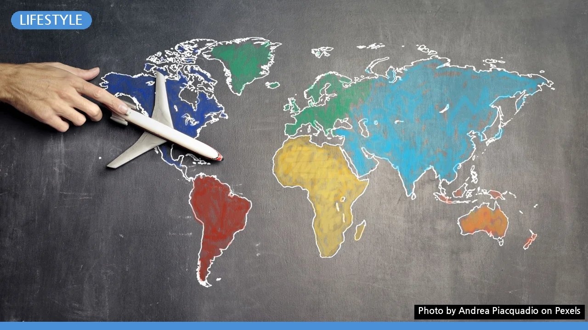

해외여행 유심 vs 로밍: 놓치면 후회할 통신비 절약 전략
사진: Andrea Piacquadio / Pexels (무료 이미지, 출처 표기)
해외여행 유심 vs 로밍, 핵심 차이점 비교
해외여행을 준비하며 통신 수단 선택은 중요한 고민 중 하나입니다. 국내 통신사 로밍부터 현지 유심, 그리고 최근 주목받는 eSIM까지 종류가 다양해 어떤 것을 골라야 할지 막막할 수 있습니다. 2026년 08월 기준으로 각 방식의 주요 특징을 비교하여 자신에게 맞는 최적의 선택을 할 수 있도록 돕겠습니다.
해외 유심, 이런 분에게 추천해요
해외 유심은 현지 통신사의 서비스를 이용하는 방식입니다. 한국에서 미리 구매하거나 현지 공항, 통신사 매장 등에서 직접 구매할 수 있습니다. 특히 장기간 해외에 머무르거나 데이터 사용량이 많은 여행객에게 비용 효율적인 선택이 될 수 있습니다.
- 예산에 민감한 여행객: 로밍보다 저렴한 가격으로 대용량 데이터를 사용할 수 있는 경우가 많습니다.
- 현지 번호가 필요한 경우: 현지에서 택시 앱, 배달 앱, 숙소 예약 등 현지 전화번호 인증이 필요할 때 유용합니다.
- 데이터 사용량이 많은 경우: 지도 검색, SNS, 동영상 시청 등 데이터 사용량이 많다면 로밍보다 훨씬 저렴하게 무제한 요금제를 이용할 수 있습니다.
- 장기 여행자: 1주일 이상 장기간 여행할 경우, 누적되는 통신비 부담을 크게 줄일 수 있습니다.
유심을 구매할 때는 반드시 자신의 휴대폰이 해외 유심과 호환되는지(컨트리락 해제 여부 등) 확인해야 합니다. 아이폰 14 이후 모델이나 일부 안드로이드 최신폰은 물리 유심 슬롯이 없는 경우가 있으니 이 또한 점검해야 합니다.
통신사 로밍, 이런 분에게 유리해요
통신사 로밍은 기존에 사용하던 국내 통신사 번호를 그대로 해외에서도 이용하는 방식입니다. 출국 전 미리 신청하거나, 해외에 도착해서도 통신사 앱이나 고객센터를 통해 신청할 수 있어 편리합니다. 특히 단기 여행이나 국내 번호 유지가 중요한 경우에 적합합니다.
- 짧은 기간 여행하는 경우: 3~5일 정도의 단기 여행이라면 유심 교체의 번거로움 없이 편리하게 로밍을 이용할 수 있습니다.
- 국내 번호 유지가 필수적인 경우: 한국에서 걸려오는 중요한 전화나 문자를 놓치고 싶지 않다면 로밍이 유리합니다. 금융 인증, 본인 확인 등 국내 번호가 필요한 상황에서도 문제가 없습니다.
- 긴급 상황 시 빠른 지원을 원하는 경우: 해외에서 통신 문제가 발생했을 때, 국내 통신사의 고객센터를 통해 한국어로 신속하게 도움을 받을 수 있습니다.
- 기기 변경이나 유심 교체가 번거로운 경우: 복잡한 절차 없이 익숙한 휴대폰을 그대로 사용하고 싶은 분들에게 편리합니다.
로밍 요금제는 통신사별, 국가별로 다양하게 출시되어 있으므로 출국 전 반드시 자신의 통신사 공식 홈페이지에서 최신 정보를 확인하고 비교해 보는 것이 중요합니다. 2026년 08월 기준으로도 다양한 프로모션 요금제가 수시로 변경될 수 있으니 꼼꼼한 확인이 필요합니다.
eSIM(이심)은 또 뭐야? 새로운 대안 탐색
최근에는 eSIM(이심)이 해외여행 통신 수단의 새로운 대안으로 떠오르고 있습니다. eSIM은 'Embedded SIM'의 약자로, 휴대폰 내부에 내장된 디지털 SIM을 의미합니다. 물리적인 유심칩 교체 없이 프로파일 다운로드만으로 통신 서비스를 이용할 수 있습니다.
eSIM의 가장 큰 장점은 편리함입니다. 유심칩을 빼고 끼울 필요가 없어 분실 위험이 없고, 여러 국가를 방문할 때도 각국의 eSIM을 다운로드하여 간편하게 전환할 수 있습니다. 또한, 기존 유심을 그대로 유지하면서 eSIM을 추가로 사용할 수 있어 국내 번호와 현지 번호를 동시에 사용하는 듀얼심(Dual SIM) 기능이 가능합니다.
단점으로는 아직 모든 휴대폰이 eSIM을 지원하지 않는다는 점과, 일부 국가에서는 eSIM 서비스 이용이 제한될 수 있다는 점입니다. 2026년 08월 기준, 아이폰XS 이후 모델, 삼성 갤럭시 Z 플립/폴드 시리즈, 갤럭시 S20 이후 모델 등 최신 기종에서 주로 지원됩니다. 사용 전 반드시 본인 휴대폰의 eSIM 지원 여부를 확인해야 합니다.
현명한 선택을 위한 체크리스트 및 주의사항
해외여행 유심, 로밍, eSIM 중 어떤 것을 선택하든, 다음 체크리스트와 주의사항을 확인하면 후회 없는 결정을 할 수 있습니다.
- 여행 기간과 목적: 단기 여행이거나 국내 번호 유지가 중요하다면 로밍을, 장기 여행이거나 저렴한 비용이 우선이라면 유심/eSIM을 고려하세요.
- 데이터 사용량: 평소 데이터를 많이 쓰는 편이라면 유심이나 eSIM의 대용량/무제한 요금제가 유리합니다.
- 휴대폰 기종 확인: eSIM을 사용하려면 본인 휴대폰이 eSIM을 지원하는지 반드시 확인해야 합니다. 유심의 경우 컨트리락 해제 여부를 점검하세요.
- 구매처 및 활성화 방법: 유심/eSIM은 한국에서 미리 구매하는 것이 현지에서 당황하는 일을 줄일 수 있습니다. 로밍은 출국 전 통신사 앱을 통해 미리 신청해두세요.
- 현지 통화 여부: 현지에서 통화를 자주 해야 한다면 현지 번호가 포함된 유심이나 로밍이 유리합니다.
- 비상 연락망 대비: 유심 사용 시 국내 번호로 걸려오는 전화를 받지 못할 수 있으므로, 가족이나 지인에게 비상 연락 수단을 미리 알려두는 것이 좋습니다.
각 통신 수단의 요금제와 세부 조건은 2026년 08월 기준으로도 수시로 변동될 수 있습니다. 가장 정확한 정보는 해당 통신사 공식 홈페이지나 유심/eSIM 판매처에서 다시 확인하시길 권장합니다.
🔗 이 글도 함께 보면 좋아요: 번아웃, 혹시 나도? 놓치면 후회할 자가진단 체크리스트 5가지 증상
관련 추천 상품
이 포스팅은 쿠팡 파트너스 활동의 일환으로, 이에 따른 일정액의 수수료를 제공받습니다.